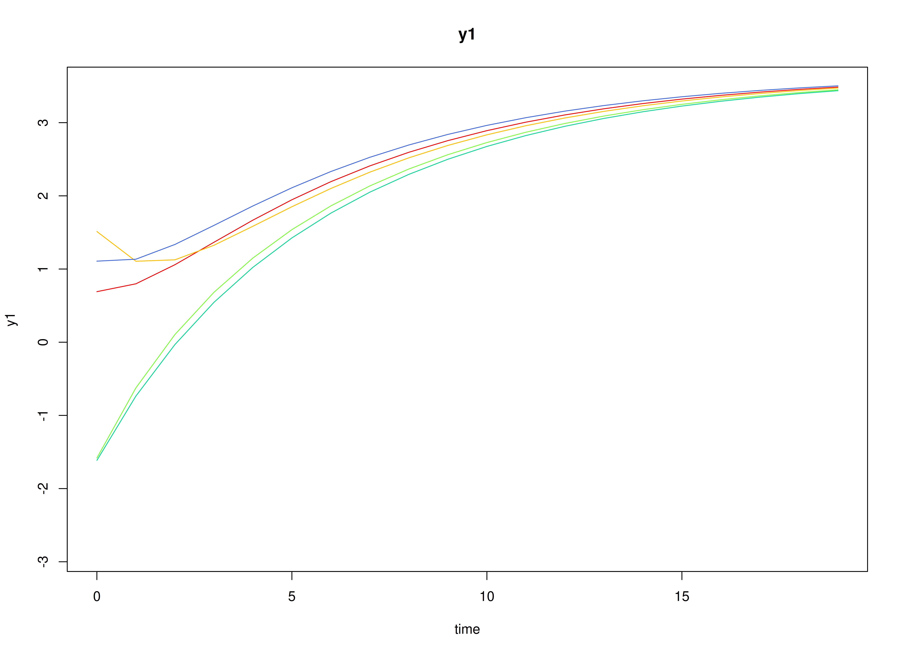
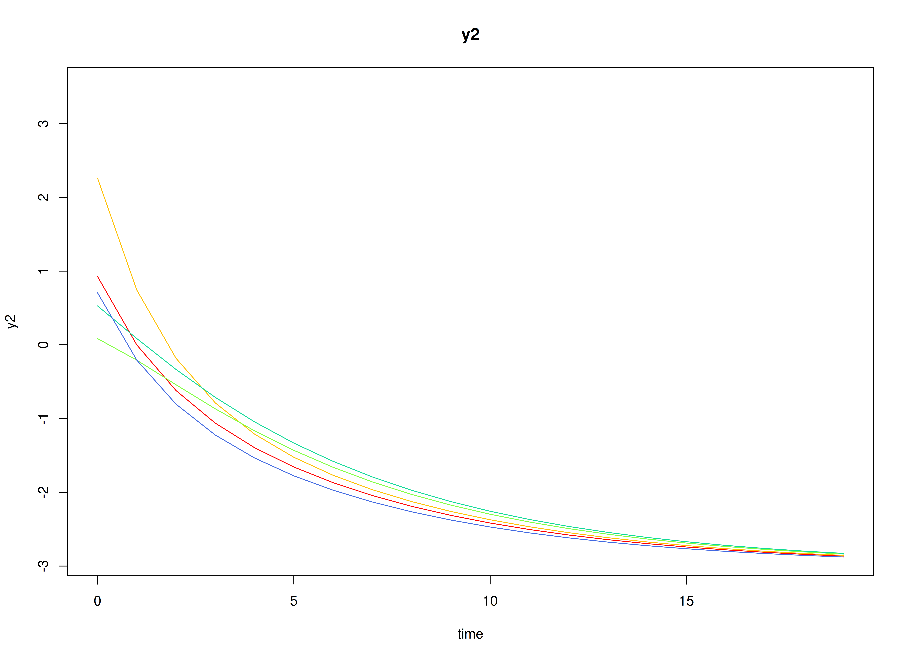
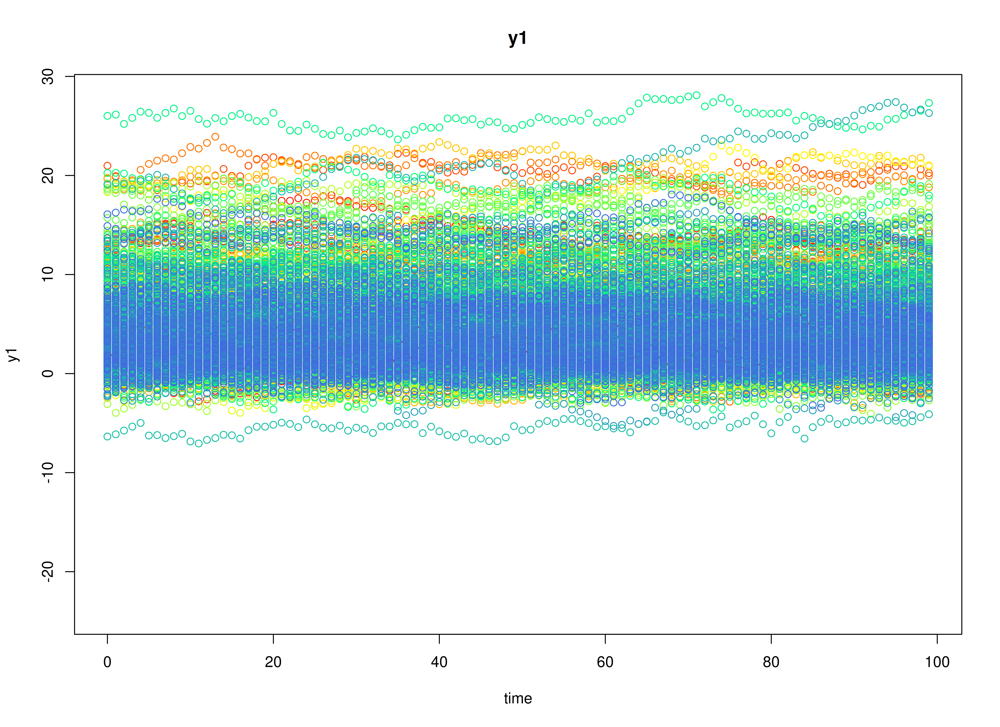
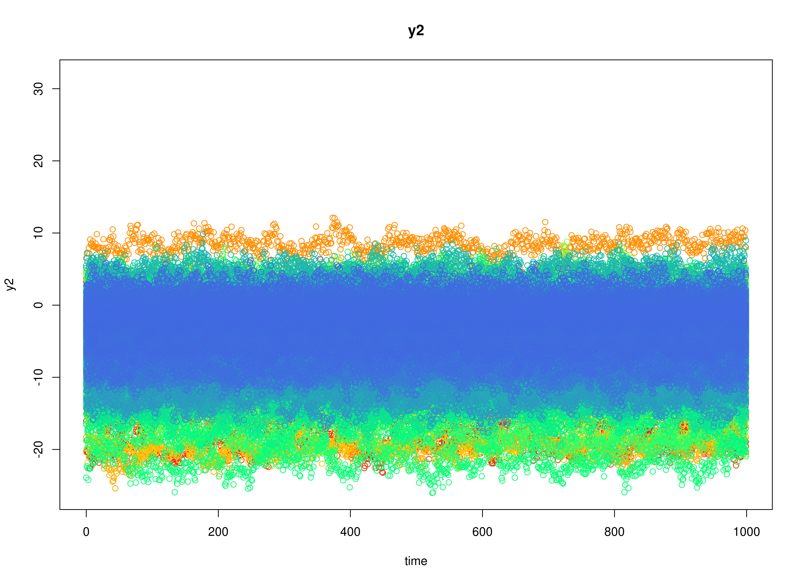

Fit the Discrete-Time Vector Autoregressive Model By ID (Stable Reciprocal Regulation)
Ivan Jacob Agaloos Pesigan
2026-02-14
Source:vignettes/stable-reciprocal-regulation-1000.Rmd
stable-reciprocal-regulation-1000.RmdDynamics Description
The Stable Reciprocal Regulation process represents a bivariate dynamic system in which two latent psychological constructs—such as positive and negative affect—mutually influence each other over time. Each construct shows moderate self-regulation (autoregressive effects) and mild opposing cross-effects, reflecting an equilibrium-seeking mechanism characteristic of emotional balance.
Individuals vary in their self-regulatory tendencies and in the strength of these antagonistic couplings. At the population level, the transition matrix indicates that increases in one construct are followed by slight decreases in the other, producing a stable, damped oscillatory pattern around individual equilibrium points. The process noise covariance allows for small correlated disturbances, while measurement errors are assumed to be minimal and symmetric across indicators.
This dynamic pattern captures a psychologically plausible process of reciprocal inhibition—where short-term fluctuations in one system component (e.g., positive affect) are naturally counteracted by adjustments in its counterpart (e.g., negative affect), leading to emotional homeostasis over time.
Model
The measurement model is given by where and are random variables.
The dynamic structure is given by where , , and are random variables, and , and are model parameters. Here, is a vector of latent variables at time and individual , represents a vector of latent variables at time and individual , and represents a vector of dynamic noise at time and individual . is a matrix of autoregression and cross regression coefficients for individual , and the covariance matrix of that is invariant across all individuals. In this model, is a symmetric matrix.
Data Generation
Notation
Let be the number of time points and be the number of individuals. We simulate a total of time points per individual, discarding the first as burn-in. The analysis uses the final measurement occasions.
Let the initial condition be given by and are functions of and .
Let the intercept vector be normally distributed with the following means and covariance matrix
Let the transition matrix be normally distributed with the following means and covariance matrix
The SimAlphaN and SimBetaN functions from
the simStateSpace package generate random intercept vectors
and transition matrices from the multivariate normal distribution. Note
that the SimBetaN function generates transition matrices
that are weakly stationary with an option to set lower and upper bounds.
The person-specific set-point vector
was derived from the generated
and
.
Let the dynamic process noise be given by
R Function Arguments
n
#> [1] 1000
time
#> [1] 10100
burnin
#> [1] 10000
# first mu0 in the list of length n
mu0[[1]]
#> [1] 4.738353 -3.747395
# first sigma0 in the list of length n
sigma0[[1]]
#> [,1] [,2]
#> [1,] 1.2855139 -0.9267996
#> [2,] -0.9267996 0.9282909
# first sigma0_l in the list of length n
sigma0_l[[1]] # sigma0_l <- t(chol(sigma0))
#> [,1] [,2]
#> [1,] 1.1338050 0.0000000
#> [2,] -0.8174241 0.5100085
# first alpha in the list of length n
alpha[[1]]
#> [1] 0.3319244 -0.1910529
# first beta in the list of length n
beta[[1]]
#> [,1] [,2]
#> [1,] 0.6764614 -0.3205201
#> [2,] -0.2392088 0.6465522
# first psi in the list of length n
psi[[1]]
#> [,1] [,2]
#> [1,] 0.20 -0.05
#> [2,] -0.05 0.18
psi_l[[1]] # psi_l <- t(chol(psi))
#> [,1] [,2]
#> [1,] 0.4472136 0.0000000
#> [2,] -0.1118034 0.4092676
# first mu (set-point) in the list of length n
mu[[1]]
#> [1] 4.738353 -3.747395Visualizing the Dynamics Without Process Noise and Measurement Error (n = 5 with Different Initial Condition)


Using the SimSSMVARIVary Function from the
simStateSpace Package to Simulate Data
library(simStateSpace)
sim <- SimSSMVARIVary(
n = n,
time = time,
mu0 = mu0,
sigma0_l = sigma0_l,
alpha = alpha,
beta = beta,
psi_l = psi_l
)
data <- as.data.frame(sim, burnin = burnin)
head(data)
#> id time y1 y2
#> 1 1 0 4.609402 -3.907561
#> 2 1 1 4.633004 -3.033394
#> 3 1 2 3.906321 -3.979011
#> 4 1 3 4.528033 -4.413606
#> 5 1 4 4.431835 -5.028547
#> 6 1 5 4.879983 -4.500720
plot(sim, burnin = burnin)

Model Fitting
The FitVARMxID function fits a VAR model on each
individual
.
LDL’-parameterized covariance matrices
Covariances such as psi and theta are
estimated using the LDL’ decomposition of a positive definite covariance
matrix. The decomposition expresses a covariance matrix
as
where: -
is a strictly lower-triangular matrix of free parameters
(l_mat_strict),
-
is the identity matrix,
-
is an unconstrained vector,
-
ensures strictly positive diagonal entries.
The LDL() function extracts this decomposition from a
positive definite covariance matrix. It returns:
- d_uc: unconstrained diagonal parameters, equal to
InvSoftplus(d_vec),
- d_vec: diagonal entries, equal to
Softplus(d_uc),
- l_mat_strict: the strictly lower-triangular factor.
sigma <- matrix(
data = c(1.0, 0.5, 0.5, 1.0),
nrow = 2,
ncol = 2
)
ldl_sigma <- LDL(sigma)
d_uc <- ldl_sigma$d_uc
l_mat_strict <- ldl_sigma$l_mat_strict
I <- diag(2)
sigma_reconstructed <- (l_mat_strict + I) %*% diag(log1p(exp(d_uc)), 2) %*% t(l_mat_strict + I)
sigma_reconstructed
#> [,1] [,2]
#> [1,] 1.0 0.5
#> [2,] 0.5 1.0
FitVARMxID
fit <- FitVARMxID(
data = data,
observed = c("y1", "y2"),
id = "id",
center = TRUE,
tries_explore = 1000,
tries_local = 100,
max_attempts = 100,
ncores = parallel::detectCores()
)Parameter estimates
head(summary(fit))
#> mu[1,1] mu[2,1] beta[1,1] beta[2,1] beta[1,2]
#> FitVARMxID_DTVAR_ID1.Rds 4.215229 -3.3309674 0.3732501 -0.13464413 -0.5044232
#> FitVARMxID_DTVAR_ID6.Rds 2.215124 -3.0180674 0.4438511 -0.10233264 -0.2038296
#> FitVARMxID_DTVAR_ID9.Rds 1.377669 -0.9612558 0.7032427 -0.19760152 -0.1299613
#> FitVARMxID_DTVAR_ID15.Rds 1.113379 -1.4423584 0.8126036 -0.15934284 -0.1963709
#> FitVARMxID_DTVAR_ID18.Rds 5.540829 -5.9388935 0.5076525 -0.01702314 -0.1532962
#> FitVARMxID_DTVAR_ID19.Rds 2.909754 -1.6154621 0.8645509 -0.01815318 -0.2694815
#> beta[2,2] psi[1,1] psi[2,1] psi[2,2]
#> FitVARMxID_DTVAR_ID1.Rds 0.6885804 0.1633240 -0.03758136 0.1944457
#> FitVARMxID_DTVAR_ID6.Rds 0.8168616 0.2211576 -0.04866281 0.1092883
#> FitVARMxID_DTVAR_ID9.Rds 0.3249598 0.1970205 -0.06703105 0.1571511
#> FitVARMxID_DTVAR_ID15.Rds 0.5821518 0.2308242 -0.03814976 0.1691012
#> FitVARMxID_DTVAR_ID18.Rds 0.5867254 0.1594835 -0.07213828 0.1922198
#> FitVARMxID_DTVAR_ID19.Rds 0.5854677 0.1908701 -0.03816517 0.1517480Proportion of converged cases
converged(
fit,
prop = TRUE
)
#> [1] 0.374Random-Effects Meta-Analysis of Person-Specific Dynamics and Means
We synthesize the person-specific estimates to recover population-level effects and their between-person variability. We use a random-effects model so the pooled mean reflects both within-person estimation uncertainty and between-person heterogeneity.
library(metaDyn)
random <- MetaVARMx(
fit,
effects = TRUE,
set_point = TRUE,
robust_v = FALSE,
robust = TRUE,
lb = TRUE,
ncores = parallel::detectCores()
)
summary(random)
#> Call:
#> MetaVARMx(object = fit, effects = TRUE, set_point = TRUE, robust_v = FALSE,
#> robust = TRUE, lb = TRUE, ncores = parallel::detectCores())
#>
#> Status code = 0
#>
#> CI type = "lb"
#> est 2.5% 97.5%
#> alpha[1,1] 3.8145 3.4745 4.1561
#> alpha[2,1] -3.1654 -3.4798 -2.8517
#> alpha[3,1] 0.6519 0.6363 0.6672
#> alpha[4,1] -0.1398 -0.1538 -0.1259
#> alpha[5,1] -0.1986 -0.2126 -0.1847
#> alpha[6,1] 0.6192 0.6045 0.6336
#> tau_sqr[1,1] 11.0897 9.6131 12.8715
#> tau_sqr[2,1] -4.7353 -5.9862 -3.6576
#> tau_sqr[3,1] 0.1477 0.0982 0.2029
#> tau_sqr[4,1] 0.0575 0.0131 0.1019
#> tau_sqr[5,1] -0.1160 -0.1668 -0.0698
#> tau_sqr[6,1] -0.0009 -0.0494 0.0476
#> tau_sqr[2,2] 9.4064 8.1483 10.9304
#> tau_sqr[3,2] 0.0984 0.0512 0.1484
#> tau_sqr[4,2] 0.1537 0.1107 0.2026
#> tau_sqr[5,2] -0.0207 -0.0617 0.0190
#> tau_sqr[6,2] -0.1380 -0.1855 -0.0961
#> tau_sqr[3,3] 0.0170 0.0141 0.0204
#> tau_sqr[4,3] 0.0093 0.0073 0.0116
#> tau_sqr[5,3] 0.0005 -0.0015 0.0026
#> tau_sqr[6,3] -0.0006 -0.0027 0.0015
#> tau_sqr[4,4] 0.0133 0.0110 0.0161
#> tau_sqr[5,4] -0.0014 -0.0032 0.0004
#> tau_sqr[6,4] 0.0000 -0.0019 0.0019
#> tau_sqr[5,5] 0.0114 0.0091 0.0143
#> tau_sqr[6,5] 0.0048 0.0029 0.0068
#> tau_sqr[6,6] 0.0136 0.0111 0.0167
#> i_sqr[1,1] 0.9987 0.9985 0.9989
#> i_sqr[2,1] 0.9993 0.9993 0.9993
#> i_sqr[3,1] 0.7983 0.7661 0.8272
#> i_sqr[4,1] 0.8351 0.8088 0.8584
#> i_sqr[5,1] 0.7818 0.7452 0.8140
#> i_sqr[6,1] 0.8578 0.8351 0.8781Normal Theory Confidence Intervals
confint(random, level = 0.95, lb = FALSE)
#> 2.5 % 97.5 %
#> alpha[1,1] 3.469027476 4.1600554308
#> alpha[2,1] -3.480557403 -2.8503078665
#> alpha[3,1] 0.635716223 0.6679863609
#> alpha[4,1] -0.153780074 -0.1257272238
#> alpha[5,1] -0.212963756 -0.1842351845
#> alpha[6,1] 0.604119887 0.6342174044
#> tau_sqr[1,1] 8.133831974 14.0455585689
#> tau_sqr[2,1] -6.504757881 -2.9657724425
#> tau_sqr[3,1] 0.086704519 0.2086805139
#> tau_sqr[4,1] 0.003085048 0.1118372207
#> tau_sqr[5,1] -0.164171806 -0.0677826678
#> tau_sqr[6,1] -0.049256440 0.0475487475
#> tau_sqr[2,2] 6.860303275 11.9524067530
#> tau_sqr[3,2] 0.051522331 0.1453585038
#> tau_sqr[4,2] 0.097768384 0.2096068958
#> tau_sqr[5,2] -0.059804552 0.0185031396
#> tau_sqr[6,2] -0.186827914 -0.0891309196
#> tau_sqr[3,3] 0.013857505 0.0200706724
#> tau_sqr[4,3] 0.006891148 0.0117665823
#> tau_sqr[5,3] -0.001848727 0.0028124217
#> tau_sqr[6,3] -0.002458834 0.0012902608
#> tau_sqr[4,4] 0.010586888 0.0160758070
#> tau_sqr[5,4] -0.003263832 0.0005199183
#> tau_sqr[6,4] -0.001947318 0.0018888751
#> tau_sqr[5,5] 0.008651441 0.0142166189
#> tau_sqr[6,5] 0.002849682 0.0067375824
#> tau_sqr[6,6] 0.010810811 0.0164813756
#> i_sqr[1,1] 0.998383960 0.9990634420
#> i_sqr[2,1] 0.999010389 0.9995450997
#> i_sqr[3,1] 0.768344015 0.8282663861
#> i_sqr[4,1] 0.809118879 0.8610035894
#> i_sqr[5,1] 0.745581967 0.8180605792
#> i_sqr[6,1] 0.838018514 0.8775264256
confint(random, level = 0.99, lb = FALSE)
#> 0.5 % 99.5 %
#> alpha[1,1] 3.360459115 4.268623791
#> alpha[2,1] -3.579576782 -2.751288488
#> alpha[3,1] 0.630646217 0.673056367
#> alpha[4,1] -0.158187496 -0.121319802
#> alpha[5,1] -0.217477341 -0.179721599
#> alpha[6,1] 0.599391225 0.638946067
#> tau_sqr[1,1] 7.205032410 14.974358132
#> tau_sqr[2,1] -7.060772790 -2.409757533
#> tau_sqr[3,1] 0.067540701 0.227844332
#> tau_sqr[4,1] -0.014001157 0.128923425
#> tau_sqr[5,1] -0.179315637 -0.052638837
#> tau_sqr[6,1] -0.064465637 0.062757945
#> tau_sqr[2,2] 6.060275836 12.752434192
#> tau_sqr[3,2] 0.036779600 0.160101235
#> tau_sqr[4,2] 0.080197280 0.227177999
#> tau_sqr[5,2] -0.072107582 0.030806170
#> tau_sqr[6,2] -0.202177224 -0.073781609
#> tau_sqr[3,3] 0.012881345 0.021046832
#> tau_sqr[4,3] 0.006125162 0.012532568
#> tau_sqr[5,3] -0.002581047 0.003544741
#> tau_sqr[6,3] -0.003047859 0.001879286
#> tau_sqr[4,4] 0.009724517 0.016938179
#> tau_sqr[5,4] -0.003858302 0.001114389
#> tau_sqr[6,4] -0.002550028 0.002491585
#> tau_sqr[5,5] 0.007777088 0.015090972
#> tau_sqr[6,5] 0.002238849 0.007348416
#> tau_sqr[6,6] 0.009919900 0.017372286
#> i_sqr[1,1] 0.998277205 0.999170196
#> i_sqr[2,1] 0.998926380 0.999629109
#> i_sqr[3,1] 0.758929528 0.837680873
#> i_sqr[4,1] 0.800967200 0.869155268
#> i_sqr[5,1] 0.734194751 0.829447795
#> i_sqr[6,1] 0.831811371 0.883733568Robust Confidence Intervals
confint(random, level = 0.95, lb = FALSE, robust = TRUE)
#> 2.5 % 97.5 %
#> alpha[1,1] 3.469027476 4.1600554308
#> alpha[2,1] -3.480557403 -2.8503078665
#> alpha[3,1] 0.635716223 0.6679863609
#> alpha[4,1] -0.153780074 -0.1257272238
#> alpha[5,1] -0.212963756 -0.1842351845
#> alpha[6,1] 0.604119887 0.6342174044
#> tau_sqr[1,1] 8.133831974 14.0455585689
#> tau_sqr[2,1] -6.504757881 -2.9657724425
#> tau_sqr[3,1] 0.086704519 0.2086805139
#> tau_sqr[4,1] 0.003085048 0.1118372207
#> tau_sqr[5,1] -0.164171806 -0.0677826678
#> tau_sqr[6,1] -0.049256440 0.0475487475
#> tau_sqr[2,2] 6.860303275 11.9524067530
#> tau_sqr[3,2] 0.051522331 0.1453585038
#> tau_sqr[4,2] 0.097768384 0.2096068958
#> tau_sqr[5,2] -0.059804552 0.0185031396
#> tau_sqr[6,2] -0.186827914 -0.0891309196
#> tau_sqr[3,3] 0.013857505 0.0200706724
#> tau_sqr[4,3] 0.006891148 0.0117665823
#> tau_sqr[5,3] -0.001848727 0.0028124217
#> tau_sqr[6,3] -0.002458834 0.0012902608
#> tau_sqr[4,4] 0.010586888 0.0160758070
#> tau_sqr[5,4] -0.003263832 0.0005199183
#> tau_sqr[6,4] -0.001947318 0.0018888751
#> tau_sqr[5,5] 0.008651441 0.0142166189
#> tau_sqr[6,5] 0.002849682 0.0067375824
#> tau_sqr[6,6] 0.010810811 0.0164813756
#> i_sqr[1,1] 0.998383960 0.9990634420
#> i_sqr[2,1] 0.999010389 0.9995450997
#> i_sqr[3,1] 0.768344015 0.8282663861
#> i_sqr[4,1] 0.809118879 0.8610035894
#> i_sqr[5,1] 0.745581967 0.8180605792
#> i_sqr[6,1] 0.838018514 0.8775264256
confint(random, level = 0.99, lb = FALSE, robust = TRUE)
#> 0.5 % 99.5 %
#> alpha[1,1] 3.360459115 4.268623791
#> alpha[2,1] -3.579576782 -2.751288488
#> alpha[3,1] 0.630646217 0.673056367
#> alpha[4,1] -0.158187496 -0.121319802
#> alpha[5,1] -0.217477341 -0.179721599
#> alpha[6,1] 0.599391225 0.638946067
#> tau_sqr[1,1] 7.205032410 14.974358132
#> tau_sqr[2,1] -7.060772790 -2.409757533
#> tau_sqr[3,1] 0.067540701 0.227844332
#> tau_sqr[4,1] -0.014001157 0.128923425
#> tau_sqr[5,1] -0.179315637 -0.052638837
#> tau_sqr[6,1] -0.064465637 0.062757945
#> tau_sqr[2,2] 6.060275836 12.752434192
#> tau_sqr[3,2] 0.036779600 0.160101235
#> tau_sqr[4,2] 0.080197280 0.227177999
#> tau_sqr[5,2] -0.072107582 0.030806170
#> tau_sqr[6,2] -0.202177224 -0.073781609
#> tau_sqr[3,3] 0.012881345 0.021046832
#> tau_sqr[4,3] 0.006125162 0.012532568
#> tau_sqr[5,3] -0.002581047 0.003544741
#> tau_sqr[6,3] -0.003047859 0.001879286
#> tau_sqr[4,4] 0.009724517 0.016938179
#> tau_sqr[5,4] -0.003858302 0.001114389
#> tau_sqr[6,4] -0.002550028 0.002491585
#> tau_sqr[5,5] 0.007777088 0.015090972
#> tau_sqr[6,5] 0.002238849 0.007348416
#> tau_sqr[6,6] 0.009919900 0.017372286
#> i_sqr[1,1] 0.998277205 0.999170196
#> i_sqr[2,1] 0.998926380 0.999629109
#> i_sqr[3,1] 0.758929528 0.837680873
#> i_sqr[4,1] 0.800967200 0.869155268
#> i_sqr[5,1] 0.734194751 0.829447795
#> i_sqr[6,1] 0.831811371 0.883733568Profile-Likelihood Confidence Intervals
confint(random, level = 0.95, lb = TRUE)
#> est 2.5 % 97.5 %
#> alpha[1,1] 3.814541e+00 3.474469159 4.1561140387
#> alpha[2,1] -3.165433e+00 -3.479833662 -2.8517247949
#> alpha[3,1] 6.518513e-01 0.636251120 0.6671707809
#> alpha[4,1] -1.397536e-01 -0.153812927 -0.1258704621
#> alpha[5,1] -1.985995e-01 -0.212648275 -0.1846890656
#> alpha[6,1] 6.191686e-01 0.604505291 0.6335617174
#> tau_sqr[1,1] 1.108970e+01 9.613082848 12.8715120323
#> tau_sqr[2,1] -4.735265e+00 -5.986191293 -3.6576330596
#> tau_sqr[3,1] 1.476925e-01 0.098182225 0.2029180020
#> tau_sqr[4,1] 5.746113e-02 0.013079237 0.1018544879
#> tau_sqr[5,1] -1.159772e-01 -0.166790011 -0.0697956967
#> tau_sqr[6,1] -8.538462e-04 -0.049356833 0.0476459103
#> tau_sqr[2,2] 9.406355e+00 8.148281273 10.9304377516
#> tau_sqr[3,2] 9.844042e-02 0.051214089 0.1483548111
#> tau_sqr[4,2] 1.536876e-01 0.110726816 0.2025961188
#> tau_sqr[5,2] -2.065071e-02 -0.061676997 0.0190010957
#> tau_sqr[6,2] -1.379794e-01 -0.185511594 -0.0960987744
#> tau_sqr[3,3] 1.696409e-02 0.014125207 0.0204081932
#> tau_sqr[4,3] 9.328865e-03 0.007327842 0.0116076641
#> tau_sqr[5,3] 4.818472e-04 -0.001515269 0.0026295732
#> tau_sqr[6,3] -5.842864e-04 -0.002696042 0.0015197570
#> tau_sqr[4,4] 1.333135e-02 0.011020556 0.0161296125
#> tau_sqr[5,4] -1.371957e-03 -0.003204743 0.0004071463
#> tau_sqr[6,4] -2.922166e-05 -0.001907718 0.0019097457
#> tau_sqr[5,5] 1.143403e-02 0.009070708 0.0143162908
#> tau_sqr[6,5] 4.793632e-03 0.002877076 0.0068335670
#> tau_sqr[6,6] 1.364609e-02 0.011115720 0.0167212484
#> i_sqr[1,1] 9.987237e-01 0.998528557 0.9989011243
#> i_sqr[2,1] 9.992777e-01 0.999250884 0.9993160595
#> i_sqr[3,1] 7.983052e-01 0.766107971 0.8271740828
#> i_sqr[4,1] 8.350612e-01 0.808765655 0.8583751770
#> i_sqr[5,1] 7.818213e-01 0.745187460 0.8140116891
#> i_sqr[6,1] 8.577725e-01 0.835099424 0.8781325808
confint(random, level = 0.99, lb = TRUE)
#> est 0.5 % 99.5 %
#> alpha[1,1] 3.814541e+00 3.3665483748 4.2620046348
#> alpha[2,1] -3.165433e+00 -3.5784376342 -2.7541298979
#> alpha[3,1] 6.518513e-01 0.6312508308 0.6719539969
#> alpha[4,1] -1.397536e-01 -0.1582271386 -0.1215879082
#> alpha[5,1] -1.985995e-01 -0.2170718106 -0.1803465199
#> alpha[6,1] 6.191686e-01 0.5998162682 0.6380442995
#> tau_sqr[1,1] 1.108970e+01 9.2079642694 13.5081890025
#> tau_sqr[2,1] -4.735265e+00 -6.4319392538 -3.3461226084
#> tau_sqr[3,1] 1.476925e-01 0.0852366200 0.2218721907
#> tau_sqr[4,1] 5.746113e-02 -0.0007293239 0.1195396127
#> tau_sqr[5,1] -1.159772e-01 -0.1837697763 -0.0568175664
#> tau_sqr[6,1] -8.538462e-04 -0.0651016178 0.0625865967
#> tau_sqr[2,2] 9.406355e+00 7.8028470092 11.4682740412
#> tau_sqr[3,2] 9.844042e-02 0.0366102354 0.1645470060
#> tau_sqr[4,2] 1.536876e-01 0.0979135058 0.2194941695
#> tau_sqr[5,2] -2.065071e-02 -0.0749840581 0.0327448977
#> tau_sqr[6,2] -1.379794e-01 -0.2021451848 -0.0834831521
#> tau_sqr[3,3] 1.696409e-02 0.0133396194 0.0216357568
#> tau_sqr[4,3] 9.328865e-03 0.0066949363 0.0123991645
#> tau_sqr[5,3] 4.818472e-04 -0.0021336805 0.0033525873
#> tau_sqr[6,3] -5.842864e-04 -0.0034170535 0.0021928943
#> tau_sqr[4,4] 1.333135e-02 0.0103906807 0.0171151439
#> tau_sqr[5,4] -1.371957e-03 -0.0038082320 0.0009738227
#> tau_sqr[6,4] -2.922166e-05 -0.0024030030 0.0025657011
#> tau_sqr[5,5] 1.143403e-02 0.0084188315 0.0153449486
#> tau_sqr[6,5] 4.793632e-03 0.0022744916 0.0075122575
#> tau_sqr[6,6] 1.364609e-02 0.0104236674 0.0178038153
#> i_sqr[1,1] 9.987237e-01 0.9984630327 0.9989519279
#> i_sqr[2,1] 9.992777e-01 0.9992453785 0.9993299425
#> i_sqr[3,1] 7.983052e-01 0.7553092370 0.8354896498
#> i_sqr[4,1] 8.350612e-01 0.7999599207 0.8655404892
#> i_sqr[5,1] 7.818213e-01 0.7331509477 0.8232762553
#> i_sqr[6,1] 8.577725e-01 0.8274897532 0.8840540203- The fixed part of the random-effects model gives pooled means .
- The random part yields between-person covariances () quantifying heterogeneity in set-point () and dynamics () across individuals.
means <- extract(random, what = "alpha")
means
#> alpha
#> y1 3.8145415
#> y2 -3.1654326
#> y3 0.6518513
#> y4 -0.1397536
#> y5 -0.1985995
#> y6 0.6191686
covariances <- extract(random, what = "tau_sqr")
covariances
#> y1 y2 y3 y4 y5
#> y1 11.0896952712 -4.73526516 0.1476925163 5.746113e-02 -0.1159772369
#> y2 -4.7352651616 9.40635501 0.0984404176 1.536876e-01 -0.0206507063
#> y3 0.1476925163 0.09844042 0.0169640886 9.328865e-03 0.0004818472
#> y4 0.0574611344 0.15368764 0.0093288653 1.333135e-02 -0.0013719567
#> y5 -0.1159772369 -0.02065071 0.0004818472 -1.371957e-03 0.0114340298
#> y6 -0.0008538462 -0.13797942 -0.0005842864 -2.922166e-05 0.0047936322
#> y6
#> y1 -8.538462e-04
#> y2 -1.379794e-01
#> y3 -5.842864e-04
#> y4 -2.922166e-05
#> y5 4.793632e-03
#> y6 1.364609e-02Finally, we compare the meta-analytic population estimates to the known generating values.
pop_mean
#> [1] 4.0081017 -3.1135633 0.6810916 -0.1432002 -0.1942151 0.6367261
pop_cov
#> [,1] [,2] [,3] [,4] [,5]
#> [1,] 12.856796905 -5.20249779 0.1964662666 0.0516164907 -0.0883602653
#> [2,] -5.202497788 8.66651926 0.0478426598 0.1419400213 -0.0212600947
#> [3,] 0.196466267 0.04784266 0.0164861144 0.0097360959 0.0002797943
#> [4,] 0.051616491 0.14194002 0.0097360959 0.0144313848 -0.0006153941
#> [5,] -0.088360265 -0.02126009 0.0002797943 -0.0006153941 0.0101332601
#> [6,] 0.003494568 -0.11120175 -0.0001206516 0.0006746266 0.0054812485
#> [,6]
#> [1,] 0.0034945683
#> [2,] -0.1112017466
#> [3,] -0.0001206516
#> [4,] 0.0006746266
#> [5,] 0.0054812485
#> [6,] 0.0133300763Summary
This vignette demonstrates a two-stage hierarchical estimation
approach for dynamic systems: 1. individual-level DT-VAR estimation,
and
2. population-level meta-analysis of person-specific dynamics and
means.